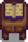

家具
| 書きかけの記事
この記事は以下の理由により、未完成としてマークされています。
|
家具は大工作業場のロビンか行商人のカートから購入することができます。どちらの店もその日ごとにランダムで家具が売られます。行商人のカートでの家具の値段はランダムですが、常に 250〜2,500gの範囲です。大工作業場で売られる家具の値段は変化しません。
250〜2,500gの範囲です。大工作業場で売られる家具の値段は変化しません。
博物館への寄付の報酬や、お祭り、カジノ、Jojaマートでの購入、その他の特殊な方法でしか手に入らない家具もあります。これらの例外は下の表の通りです。
初めての家のアップグレードのあと、ロビンは大工作業場で家具カタログを売るようになります。家具カタログを置くと、それを使うことで家具が 0gで無限に購入できるようになります。
0gで無限に購入できるようになります。
モンスターを倒す、木箱や樽を壊す、木を揺らしたり伐採したりする、発掘ポイントを掘る、砂金採りをする、などのアクションをすると、低確率でランダムな家具が手に入ります。
ほとんどの家具は屋外に置くことができますが、一部のアイテムは、牧場の家または納屋の中以外に置くことはできません[1]。家具は設置可能なマスに緑色の四角を表示し、設置できない場合は赤色の四角を表示します。
家具は出荷したりスターデューバレーの店や商人に売ったり、住人にプレゼントしたりすることはできません。
操作
- PC版: 選択した状態で
 右クリックすると、アイテムによって回転または設置します。
右クリックすると、アイテムによって回転または設置します。  左クリックで簡単に拾って移動できる家具もあれば、どうぐを使うか左クリックの長押しで一旦回収する必要がある家具もあります。
左クリックで簡単に拾って移動できる家具もあれば、どうぐを使うか左クリックの長押しで一旦回収する必要がある家具もあります。 - Switch版:
 ボタンで家具を掴んだり設置したりでき、
ボタンで家具を掴んだり設置したりでき、 ボタンで家具を回転させることができます。設置場所を選ぶには右ジョイスティックを使用します。
ボタンで家具を回転させることができます。設置場所を選ぶには右ジョイスティックを使用します。 - Xbox版:
 ボタンまたは
ボタンまたは ボタンを押すと、設置ガイドを使わずに素早く家具を設置できます。回収する場合はボタンです。この方法では、十分なスペースがない場合は家具は設置されません。家具を撤去する場合はその正面に立ってボタンを押します。より細かい操作をする場合は、右のトグルを使って室内の家具を動かし、ボタンで設置または撤去します。この方法では家具は半透明で表示され、その場所に設置可能かどうかを示す設置ガイドが表示されます。一部の家具は設置前にボタンを押すことで回転させることができます。
ボタンを押すと、設置ガイドを使わずに素早く家具を設置できます。回収する場合はボタンです。この方法では、十分なスペースがない場合は家具は設置されません。家具を撤去する場合はその正面に立ってボタンを押します。より細かい操作をする場合は、右のトグルを使って室内の家具を動かし、ボタンで設置または撤去します。この方法では家具は半透明で表示され、その場所に設置可能かどうかを示す設置ガイドが表示されます。一部の家具は設置前にボタンを押すことで回転させることができます。 - いずれのシステムでも、どうぐを使ったり「どうぐを使う」ボタン（PC版では左クリック）を長押ししないと一部の家具は回収できません。
イス
イスは屋外に設置できます。
家具カタログから入手可能なすべての椅子は、行商人のカートにて 250〜2,500gで販売されます。
250〜2,500gで販売されます。
ベンチ
ベンチは屋外に設置できます。
家具カタログから入手可能なすべてのベンチは行商人のカートにて 250〜2,500gでも販売されます。
250〜2,500gでも販売されます。
| アイテム | 入手先 | 値段 |
|---|---|---|
ソファ
ソファは、カビの生えたソファを除いて屋外に設置できません。
家具カタログから入手可能なすべてのソファは、行商人のカートでも 250〜2,500gで販売されます。
250〜2,500gで販売されます。
|
|
ひじかけイス
ひじかけイスは屋外に設置できません。
家具カタログから入手可能なすべてのひじかけイスは、行商人のカートでも 250〜2,500gで販売されます。
250〜2,500gで販売されます。
| アイテム | 入手先 | 値段 |
|---|---|---|
テーブル
テーブルは屋外に設置できます。また、テーブルの上にアイテムを飾ることもできます。
アイテムを持ったまま、テーブルの上で右クリックするとアイテムが飾られます。大きなテーブルの場合は、テーブルの中央付近に立ってクリックしないとアイテムを飾ることができず、テーブル自体を回収してしまいます。
家具カタログから入手可能なすべてのテーブルは、行商人のカートでも 250〜2,500gで販売されます。
250〜2,500gで販売されます。
|
|
長机
長机は屋外に設置できます。また、長机の上にアイテムを飾ることもできます。
アイテムを持ったまま、テーブルの上で右クリックするとアイテムが飾られます。長机の場合は、テーブルの中央付近に立ってクリックしないとアイテムを飾ることができず、テーブル自体を回収してしまいます。
家具カタログから入手可能なすべての長机は、行商人のカートでも 250〜2,500gで販売されます。
250〜2,500gで販売されます。
| アイテム | 入手先 | 値段 |
|---|---|---|
本棚
本棚は屋外に置けません。
以下の本棚は行商人のカートから 250〜2,500gで、家具カタログから
250〜2,500gで、家具カタログから 0gで購入できます。
0gで購入できます。
|
|

タンス
タンスは屋外には置けません。
タンスは衣服、帽子、はき物、指輪などの収納に使用できます。アイテムを入れた状態ではゴミ箱で捨てることはできません。
家具カタログから 0gで入手可能なすべてのタンスは、行商人のカートにて
0gで入手可能なすべてのタンスは、行商人のカートにて 250〜2,500gでも販売されます。
250〜2,500gでも販売されます。
|
|
暖炉
暖炉は屋外に置けません。
設置後は、右クリックで火をつけたり消したりできます。
家具カタログから入手可能なすべての暖炉は、行商人のカートでは販売していません。
|
|
ラグ
ラグは屋外に置けません。
家具カタログから入手できるラグは、いずれも行商人のカートでは販売されません。
|
|


フロアの仕切り
フロアの仕切りは屋外に置けません。
家具カタログから入手可能なフロアの仕切りは、いずれも行商人のカートでは販売されません。
|
クッション
クッションは屋外に置けません。
家具カタログから入手可能なクッションは、いずれも行商人のカートでは販売されません。
|
|
ランプ・壁掛け照明
ランプや壁掛け照明は屋外に置けません。ランプは、トリ小屋や家畜小屋の中に置くことができます。
ランプや壁掛け照明は午後6時になると点灯し、ランプは半径約6マス、壁掛け照明は半径約2マスを照らします。
家具カタログから入手可能なすべてのランプは、行商人のカートにて 250〜2,500gで販売されています。
250〜2,500gで販売されています。
|
|
窓
窓は屋外に置けません。
家具カタログから入手可能な窓はいずれも、行商人のカートでは販売されません。
|
|
テレビ
壊れたテレビ以外のテレビは屋外に置けません。
テレビで、テレビ番組を見ることができます。ただし、壊れたテレビは機能しません。
家具カタログから入手可能なすべてのテレビは、行商人のカートでも 250〜2,500gにて販売されます。
250〜2,500gにて販売されます。
|
|
ベッド
ベッドは屋外に置けません。ただし、家具が置ける建物内ならどこにでも置けます。
プレイヤーはベッドで就寝して一日を終え、エナジーと体力を回復させることができます。プレイヤーは子供用ベッドでは寝られません。
家具カタログから入手可能なすべてのベッドは、行商人のカートでも 250〜2,500gで販売されます。
250〜2,500gで販売されます。
|
|


観賞植物
観葉植物
観葉植物は屋外に置けます。
15種類の観葉植物はいずれも家具カタログから入手できます。また大工作業場にて 250g、行商人のカートにて
250g、行商人のカートにて 250〜2,500gでも販売されます。
250〜2,500gでも販売されます。
| 観葉植物 | ||||||||||||||
|---|---|---|---|---|---|---|---|---|---|---|---|---|---|---|
自立する観賞植物
自立する観賞植物は屋外に置けます。
家具カタログから入手可能な自立する観賞植物は、いずれも行商人のカートでは販売されません。
|
|
壁掛け植物
壁掛け植物は屋外に置けます。
家具カタログで入手可能なすべての壁掛け植物は、行商人のカートでも 250〜2,500gで販売されます。
250〜2,500gで販売されます。
|
|
シーズンプラント
シーズンプラントは屋外に置けます。一度配置すると、季節とともに外観が変化します。
シーズンプラントは行商人のカートや家具カタログからは入手できません。
| 春の外観 | 夏の外観 | 秋の外観 | 冬の外観 | 入手方法 | 値段 |
|---|---|---|---|---|---|
| エッグフェスティバル | |||||
| 夜の市 | |||||
| エッグフェスティバル | |||||
| 夜の市 | |||||
| フラワーダンス | |||||
| 夜の市 | |||||
| 夜の市 | |||||
| 夜の市 | |||||
| フラワーダンス | |||||
| 夜の市 |
ファンシーな観葉植物
すべてのファンシーな観葉植物、および観葉植物の左3種は町長の屋敷にある賞品マシーンから入手可能です。残りの観葉植物2種は映画館のクレーンゲームで入手可能です。
|
| ||||||||||||||||
絵画
絵画は屋外に置けません。
家具カタログから入手可能な絵画は、すべて行商人のカートでも 250〜2,500gで販売されます。
250〜2,500gで販売されます。
|
|
小さな絵画の位置
いくつかの小さな絵は、他の絵よりも壁の高い位置、または低い位置に掛かることに注意してください。

夜の市の絵画
有名画家のルピニが 1,200gで夜の市開催中毎日さまざまな絵画を売っています。
絵画は全部で9つあり、3年間で1周します。
1,200gで夜の市開催中毎日さまざまな絵画を売っています。
絵画は全部で9つあり、3年間で1周します。
| アイテム | 日付 | 年 | 価格 |
|---|---|---|---|
| 冬の15日 | 1, 4, 7, … | ||
| 冬の16日 | 1, 4, 7, … | ||
| 冬の17日 | 1, 4, 7, … | ||
| 冬の15日 | 2, 5, 8, … | ||
| 冬の16日 | 2, 5, 8, … | ||
| 冬の17日 | 2, 5, 8, … | ||
| 冬の15日 | 3, 6, 9, … | ||
| 冬の16日 | 3, 6, 9, … | ||
| 冬の17日 | 3, 6, 9, … |
ポートレート
ポートレートは屋外に置けません。
住人とのハート14イベントを見た後、行商人のカートで常に販売されるようになります。
|
映画のポスター
映画のポスターは屋外に置けません。
映画のポスターは、映画館内のクレーンゲームをプレイすることによってのみ入手できます。各ポスターは、映画の上映期間中のみ、クレーンゲームにランダムに出現します。
|
|
装飾用のドア
装飾用のドアは屋外に置けません。
家具カタログから入手可能なすべての装飾用のドアは、行商人のカートでは販売されません。
|
|
バナー
バナーは屋外に置けません。
バナーは行商人のカートでは販売されません。
| アイテム | 入手先 | 価格 |
|---|---|---|
| 夜の市のデコレーションボート | ||
| 氷まつり | ||
| ゲッコウクラゲのダンス | ||
| エッグフェスティバル | ||
| 冬星祭 |
壁掛け家具
壁掛け家具は屋外には設置できません。
| 書きかけの記事
この記事は以下の理由により、未完成としてマークされています。
|
|
|
水槽
水槽は屋外に設置できません。
アイテムを入れた状態では、インベントリのゴミ箱で捨てることはできません。特定のアイテムを持った状態で水槽を右クリックすることで、そのアイテムを入れて水槽の見た目を変えることができます。中に入っているアイテムのリストを見たり、中のアイテムを取り出したりするには、何も持っていない状態で水槽を右クリックします。水槽内の静止した生き物や装飾の配置場所および見た目はランダムですが、わざわざ取り出さなくても、水槽自体を回収して再設置することで変更できます。
| アイテム | 入手先 | 値段 |
|---|---|---|
特別注文「トロピカルフィッシュ」クリア後のみ |
||
巨大な切り株のクエストクリア後のみ |
||
たいまつ
たいまつは屋外に置くことができます。
| アイテム | 入手先 | 価格 |
|---|---|---|
| 島のトレーダー | ||
| ルアウパーティー | ||
| 夜の市のデコレーションボート | ||
| 夜の市のデコレーションボート | ||
装飾（大）
大きな装飾は、中華風キャビネットと工業用パイプを除いてすべて屋外に設置できます。
家具カタログから入手可能なすべての大きな装飾は、行商人のカートでは販売されません。
|
|


装飾（小）
小さな装飾は、全て屋外に設置できます。
家具カタログから入手可能なすべての小さな装飾は、行商人のカートでは販売されません。
|
|
特別なアイテム
特別なアイテムは屋外に設置できます。
|
|
カタログ
カタログは屋外に設置できます。
設置後は、カタログを「使用する」ことによって、 0gで無制限に家具・壁紙・フローリングを入手できます。
0gで無制限に家具・壁紙・フローリングを入手できます。
| アイテム | 入手先 | 値段 |
|---|---|---|
 家具カタログ 家具カタログ
|
||
| 砂漠フェスティバル | ||
| Jojaマート | ||
|  魔術師カタログ | ||
| N/A |
家の家具
以下はそれぞれの牧場の家に付属する家具のリストです。マルチプレイヤーの小屋にも付属します。
| スタンダード | リバーランド | フォレスト | ヒルトップ |
|---|---|---|---|
|
|
|
|
|
| ワイルド | 4コーナーズファーム | ビーチの牧場 | メドウランズ |
|---|---|---|---|
|
|
|
|
|
裏技
- イスなどのプレイヤーが座ることのできる家具は、障害物を回避するのに使用できます。イスを置いて座り、反対側に降りると、普通では行けないエリアに入ることができます。
- マルチプレイヤー中に、複数のプレイヤーがテーブル上に置かれたアイテムを全く同じタイミングで拾おうとした場合、アイテムは複製され、拾おうとしたプレイヤー全員がそのアイテムのコピーを獲得します。
参照
- ↑ 家具の設置ルールの詳細はFurniture::placementRestrictionを参照
更新履歴
- 1.0: 導入。
- 1.1: 多くの家具を家具カタログから購入できるようになりました。新しいアイテムが追加されました。
- 1.3.27: 暖炉が移動可能になりました。新しいアイテムが追加されました。
- 1.4: タンスを使用して衣服、帽子、はき物、指輪を保管できるようになりました。
- 1.5: 多くの家具が屋外に設置可能になりました。ベッドが移動可能になりました。プレイヤーは椅子に座れるようになりました。水槽を含む新しいアイテム、新しい入手箇所、新しい牧場が追加されました。
- 1.6: 280種類の新しい家具を追加。5種類のテーマカタログを追加（Joja家具カタログ、魔術師カタログ、ジュニモカタログ、レトロカタログ、ゴミカタログ）。装飾用のランタンが点灯するようになりました。イチゴのベッド、イチゴのダブルベッド、海賊ベッドは家具カタログから入手不可能になりました。さまざまなアクションを行うと低確率で家具が入手できるようになりました。いくつかの既存の家具の説明文が「家の中に置くことができます。」から「飾りとして置くことができます。」に変更されました。家具は作物の上に設置できなくなりました。
- 1.6.9: ベッドが、家具の置ける建物内であればどこにでも設置可能になりました。
| 家具 | |
|---|---|
| イス | 青いスツール • 青いダイナーチェア • 赤いダイナーチェア • ウィンターチェア • 王様のイス • オーク材のイス • オレンジのオフィススツール • ガーデンチェア • カントリーチェア • キュートなイス • 切りかぶの腰かけ • グリーンのオフィススツール • グリーンのふかふかシート • クリスタルのイス • グルーヴィーなイス • クルミ材のイス • ジュニモのイス • ジュニモのスツール • Jojaのイス • Jojaのスツール • ダークな玉座 • ダイニングチェア（黄） • ダイニングチェア（赤） • 砂漠のイス • トロピカルチェア • バーチ材のイス • ピンクのオフィスチェア • ピンクのふかふかシート • ブレックファーストチェア • 魔術師のイス • 魔術師のスツール • マホガニーのイス • 緑のスツール • むらさきのオフィスチェア • メタルチェア • レトロなイス • レトロなスツール |
| ベンチ | オーク材のベンチ • クルミ材のベンチ • バーチ材のベンチ • マホガニーのベンチ • モダンなベンチ |
| ソファ | イエローソファ • カビの生えたソファ • グリーンソファ • ジュニモのソファ • Jojaのソファ • ダークなソファ • 長いブラウンソファ • ブラウンソファ • ブルーソファ • 森のソファ • レッドソファ • レトロなソファ • 魔術師のソファ |
| ひじかけイス | イエローのひじかけイス • グリーンのひじかけイス • ブラウンのひじかけイス • ブルーのひじかけイス • レッドのひじかけイス |
| テーブル | ウィンターテーブル • 占い師のテーブル • オーク材のテーブル • キャンディ柄のテーブル • クルミ材のテーブル • グレーのJojaのコーヒーテーブル • 豪華なテーブル • コーヒーテーブル • 酒場のテーブル • ジュニモのテーブル • Jojaのコーヒーテーブル • Jojaのテーブル • 蒸留酒テーブル • 石器時代のテーブル • ダークなテーブル • 太陽のテーブル • 月のテーブル • 砂漠のテーブル • バーチ材のテーブル • パズルテーブル • ぶあつい石板 • 魔術師のテーブル • マホガニーのテーブル • モダンなテーブル • ルアウのテーブル • レトロなテーブル • ワインテーブル |
| ティーテーブル | オーク材のティーテーブル • クルミ材のティーテーブル • ジュニモのティーテーブル • Jojaコーラのティーテーブル • バーチ材のティーテーブル • 魔術師のティーテーブル • マホガニーのティーテーブル • モダンなティーテーブル • レトロなティーテーブル |
| サイドテーブル | ウィンターサイドテーブル • 砂漠のサイドテーブル • オーク材のサイドテーブル • おばあちゃんのサイドテーブル • ガーデンサイドテーブル • クルミ材のサイドテーブル • グレーのJojaのサイドテーブル • ジュニモのサイドテーブル • Jojaのサイドテーブル • バーチ材のサイドテーブル • 魔術師のサイドテーブル • マホガニーのサイドテーブル • モダンなサイドテーブル • レトロなサイドテーブル |
| 長いテーブル | 豪華なダイニングテーブル • ウィンターダイニングテーブル • 祝祭用ダイニングテーブル • マホガニーのダイニングテーブル • モダンなダイニングテーブル |
| 本棚 | アートな本棚 • 大きな魔術師の本棚 • グレーのJojaの本棚 • 豪華な本棚 • ジュニモの本棚 • Jojaの本棚 • ダークな本棚 • 小さな魔術師の本棚 • 低い本棚 • 低い魔術師の本棚 • 魔術師の本棚 • モダンな本棚 • レトロな本棚 |
| タンス | オーク材のタンス • クルミ材のタンス • グレーのJojaのタンス • ジュニモのタンス • Jojaのタンス • バーチ材のタンス • 魔術師のタンス • マホガニーのタンス • レトロなタンス |
| 暖炉 | 石の暖炉 • イリジウムの暖炉 • エレガントな暖炉 • 怪物暖炉 • 砂漠の暖炉 • ジュニモの暖炉 • Jojaの暖炉 • ストーブ • 魔術師の暖炉 • レトロな暖炉 • レンガの暖炉 |
| ラグ | 赤いコテージラグマット • 赤いラグマット • 石のフローリング • 渦巻きのラグ • 薄緑色のラグマット • 海のラグ • 黄麻布ラグ • 大きい赤色ラグマット • 大きなコテージラグマット • 大きなJojaのラグ • 大きな緑色のラグマット • 大きいレトロなラグ • 海賊ラグ • 海洋ラグ • 氷のラグマット • 古典的なラグマット • 砂漠のラグ • サンディのラグ • 四角いジュニモのラグ • 四角いJojaのラグ • ジュニモのマット • ジュニモのラグ • Jojaのラグ • 神秘的なラグマット • スノーウィーラグ • ダークなラグマット • 竹マット • 小さなジュニモのマット • 小さなJojaのラグ • パッチワークラグマット • ファンキーなラグマット • フラワーラグマット • フルーツサラダラグ • フロアの仕切り • 星月夜のラグ • 骨のラグ • 円形のジュニモのラグ • みどりのコテージラグマット • 木版ラグ • モダンなラグマット • モンスターラグ • ルーン文字のラグ • レトロなラグ • 四角いレトロなラグ • レトロなマット |
| クッション | 黒いクッション • 青いクッション • 茶色いクッション • ダークなジュニモのクッション • ダークでレトロなクッション • ダークな魔術師のクッション • グレーのJojaのクッション • 緑のクッション • Jojaのクッション • ジュニモのクッション • 赤いクッション • レトロなクッション • 魔術師のクッション • 黄色いクッション |
| ランプ 壁掛け燭台 |
飾り付きのランプ • 壁掛け燭台 • カントリーなランプ • キャンドルランプ • クラシックなランプ • ジュニモのランプ • Jojaのランプ • ボックスランプ • 魔術師のランプ • モダンなランプ • レトロなランプ |
| 窓 | 板で塞がれた窓 • 飾り付きの窓 • 三角窓 • 小さな窓 • 彫刻窓 • 鉄の窓 • のぞき窓 • ふつうの窓 |
| テレビ | 壊れたテレビ • トロピカルTV • 箱型TV • プラズマTV • フロアTV • レトロなテレビ |
| ベッド | イチゴのダブルベッド • 青いピンストライプのベッド • 青いピンストライプのダブルベッド • エキゾチックなダブルベッド • 海賊のダブルベッド • カバノキのダブルベッド • 豪華な赤いダブルベッド • 子供用ベッド • ジュニモのベッド • Jojaのベッド • ダブルベッド • トロピカルダブルベッド • トロピカルベッド • ベッド • 星降るダブルベッド • 魔術師のベッド • Midnight Beach Bed • Midnight Beach Double Bed • モダンなダブルベッド • 野生のダブルベッド • 漁師のダブルベッド • レトロなベッド |
| 観賞植物 | 赤キノコの鉢植え • エキゾチックな木 • 観葉植物 • 木の柱 • シーズンプラント • 室内用イトスギ • 室内用ヤシの木 • ジュニモの花 • ジュニモの植物 • ジュニモの木 • 卓上鉢植え • 小さな鉢植え • 小さなマツの木 • デラックスツリー • トピアリー • ひまわりのドライフラワー • ファンシーな観葉植物 • ビニールの苗 • ビニールの鉢植え • 冬星祭のツリー • ぼんさい • 沼地の植物 • ロングサボテン • ロングパーム • コーンプラント • ねじれた木 • レトロな花 • レトロな植物 • 背の高い観葉植物 |
| 壁掛け植物 | ウィンターツリーデカール • 大きなライトストリング • 壁掛けのヒマワリ • 壁掛けバスケット • サボテンのステッカー • 室内吊りバスケット • ジャングルのステッカー • 小さな壁掛けのヒマワリ • つる植物のステッカー • ヤシの木のステッカー • ヤシの葉の壁飾り • ダークな葉っぱの壁飾り • 葉っぱの壁飾り • 明るい葉っぱの壁飾り |
| 絵画 | 「抽象」 • 「エコーヒルの夜」 • 「バイナリ」 • 「ブルーベリー」 • 「ブルーシティ」 • 「船」 • カリコの滝 • 「チェッカー」 • カラフルなセット • 「公民館」 • 「踊る草原」 • 葉っぱの絵 • 「氷の夢」 • 象形文字 • 「グルーヴィー」 • 「ハイウェイ89」 • 「小屋」 • Jの絵 • 「翡翠の丘」 • 「翡翠の丘」（大） • Jojaコーラの絵 • Joja本社の絵 • 「カイトマスター '95」 • 「小さな仲間たち」 • 「小さな木」 • マスの飾り • 私の最初の絵 • 花の刺しゅう画 • 「通路」 • 「物理学101」 • ブタの絵 • 「原発の挙止」 • 「ジェム海の女王」 • 「ルーン文字」 • 「尖塔」 • 「イカちゃん」 • 「スタードロップ」 • 「宇宙船」 • 「太陽#44番」 • 「太陽#45番」 • 太陽の砂丘 • 「ムツァマルー」 • 「UFO」 • 「白い邸宅」 • 「VGAパラダイス」 • 「風景」 • 「ヴォイドの渦」 • 「火山」の写真 • 「魔術師の塔」 |
| ルピニの絵画 | 「1000年後」 • 「赤いワシ」 • 「雲々」 • 「三本の樹」 • 「太陽の王国」 • 「土くれの地」 • 「人魚の肖像画」 • 「熱帯魚 173」 • 「蛇」 |
| ポートレート | アビゲイルのポートレート • アレックスのポートレート • エリオットのポートレート • エミリーのポートレート • ヘイリーのポートレート • ハーヴィーのポートレート • クロバスのポートレート • リアのポートレート • 年間最優秀経営者 • マルのポートレート • ペニーのポートレート • サムのポートレート • セバスチャンのポートレート • シェーンのポートレート |
| 映画のポスター | 「雨の中での遠吠え」 • 「ウンバス」 • 「コールドスター牧場での奇跡」 • 「自然の不思議：私たちの活気に満ちた世界を探る」 • 「ズズシティエクスプレス」 • 「大草原の王の旅：映画」 • 「ミステリアム」 • 「勇敢な小さな苗木」 |
| ドア | 装飾用のドア • 装飾用のJojaのドア • 装飾用のジュニモのドア • 装飾用のレトロなドア • 装飾用の魔術師のドア |
| バナー | 雲のバナー • ゲッコウクラゲのバナー • 氷のバナー • パステルカラーのバナー • 冬のバナー • レトロなバナー |
| 壁掛け | いかり • Art Photo • Art Photo 2 • 掲示板 • 「焼け焦げた供物」 • カレンダー • 天井用の旗 • ニワトリのステッカー • 雲のステッカー • ウシのステッカー • 飾りのオノ • 装飾用のオーク材のハシゴ • 飾りのピッチフォーク • 装飾用のシャベル • 装飾用のクルミ材のハシゴ • 砂漠の旗 • ほこりまみれのドクロ • エリクサーの棚 • Exotic Palace • つるされた魚 • つりさげシールド • J（サイン） • Jojaコーラネオン • Jのライト • Jojaコーラの壁飾り • ジュニモの星 • ジュニモの壁掛け額 • 救命浮き輪 • 照明スイッチ • スナップ写真 • 丸太の壁パネル • 鉱山労働者の紋章 • 模型飛行機 • つりさげモンスター • ナイトスカイデカール #1 • ナイトスカイデカール #2 • ナイトスカイデカール #3 • コンセント • Periodic Table • ピエールの看板 • 海賊旗 • ピラミッドステッカー • サムのスケートボード • ドクロのポスター • 小さなエリクサーの棚 • 小さなエリクサーの棚の積み重ね • 小さなウォールパンプキン • エリクサーの棚の積み重ね • 星空の窓のステッカー • ストロベリーデカール • 壁掛け時計 • ウォールパンプキン • ウォールフレンド • 魔女のホウキ • 魔術師の本棚 • 木製の壁パネル • 世界地図 |
| 水槽 | 大きな水槽 • 豪華な水槽 • ジャングルの水槽 • 小さな水槽 • 水の聖域 • モダンな水槽 |
| たいまつ | 切り株のたいまつ • ジャングルトーチ • 普通のたいまつ |
| 装飾（大） | クマの像 • 鳥小屋 • ボボ像 • パンフレットのキャビネット • バタフライハッチ • キャットツリー • 大釜 • 陶器の柱 • ニワトリの像 • 中華風キャビネット • 物干しロープ • コートスタンド • ダークなキャットツリー • ダークな犬小屋 • ダークピアノ • 装飾用のタル • 装飾用の剣 • 飾りのゴミ箱 • 犬小屋 • エレガントな花びん • 金の柱 • 食いしん坊の像 • 緑の蛇の像 • 工業用パイプ • イリジウムのクロバス • Jojaコーラの冷蔵庫 • Jojaのクレート • Jojaのショッピングカート • Jojaの金庫 • ジュニモの小屋 • ジュニモ・プラッシュ • 大きなJojaのクレート • 大きなジュニモの小屋 • リアの彫刻 • ビッグおふとんベア • 黒曜石の花びん • 紫の蛇の像 • レトロなキャビネット • 無線用の机 • サムのブームボックス • 骨格標本 • ナマケモノの化石 • 小さなジュニモの小屋 • Jojaの箱の積み重ね • 晶洞石のおきもの • トーテムポール • アップライトピアノ • 魔術師の研究机 • ウンバス像 |
| 装飾（小） | アルミ缶 • アメシストの水晶玉 • アクアマリンの水晶玉 • 青い本 • 青い眠ったジュニモ • 本の山 • 本の積み重ね • 茶色い本 • 埋まったタイヤ • 会計レジ • 水晶玉 • はなやかなボウル • 装飾用の出入り口 • 装飾用ランタン • エリクサーのセット • エメラルドの水晶玉 • 落ちた青い本 • 落ちた茶色い本 • 落ちた緑の本 • 落ちた紫の本 • 落ちた赤い本 • 落ちた黄色い本 • おふとんベア • ふたんラビット • 地球儀 • グレーの眠ったジュニモ • 緑の本 • 緑の眠ったジュニモ • Jojaコーラの缶 • ジュニモのバッグ • ジュニモの荷物 • ジュニモの額 • ジュニモのつぼ • 大きな本の山 • 大きな本の積み重ね • 汚れたシャツ • 散らかったシャツ • 帆船の模型 • オレンジの眠ったジュニモ • ビニール袋 • 紫の本 • 紫の眠ったジュニモ • 赤い本 • 赤い眠ったジュニモ • レトロなラジオ • ルビーの水晶玉 • ソングストーン • 6缶パックリング • 小さな本の山 • 小さな本の積み重ね • 小さなクリスタル • スモールジュニモぬいぐるみ • 小さなジュニモのつぼ • こぼれた飲み物 • リスの像 • タイヤ • トパーズの水晶玉 • ２つのエリクサー • 包み紙 • 黄色い本 • 黄色い眠ったジュニモ |
| 特別なアイテム | ??ピンキーレモン?? • ??フロッグモン?? • ??HMTGF?? • 丸太 • グリーンステッキ（大） • レッドステッキ（大） • 呪われたマネキン • ドラムブロック • からっぽのカプセル • フルートブロック • 墓石 • グリーンステッキ（小） • ゲームマシン：ジュニモカート • フラミンゴ • 平丸太 • マネキン • いろいろステッキ • 干し草俵 • ウサギのぬいぐるみ • ゲーム機（プレーリーキング） • レッドステッキ（小） • 季節の飾り • 船舶の象徴 • コーラマシン • ルイスの黄金像 • スターデューヒーロートロフィー • おわりなき幸運の像 • 完全無欠の像 • 真の完璧の像 • 石のカイム • 石のカエル • 石のジュニモ • 石のフクロウ • 石のフクロウ（秘密） • 石のオウム • 奇妙なカプセル • よろい一式 • ティーセット • タルフラワー • 邪悪な像 |
| カタログ | 家具カタログ • カタログ • Joja家具カタログ • ジュニモカタログ • レトロカタログ • ゴミカタログ • 魔術師カタログ |